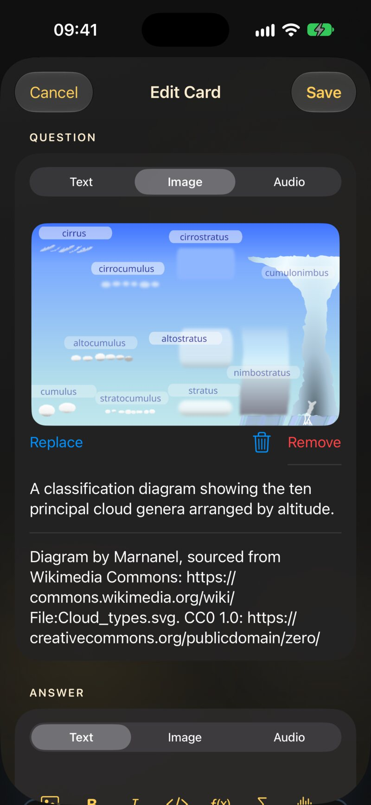
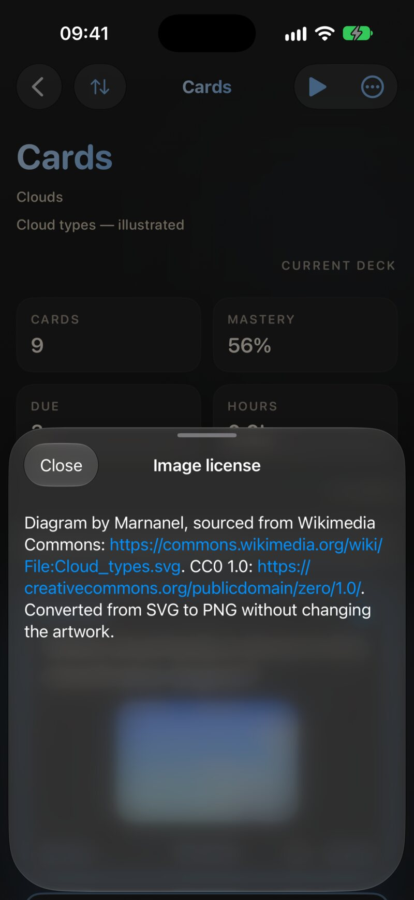
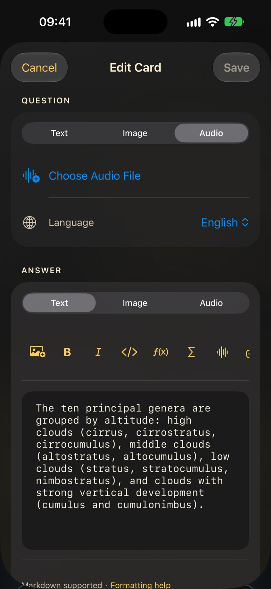
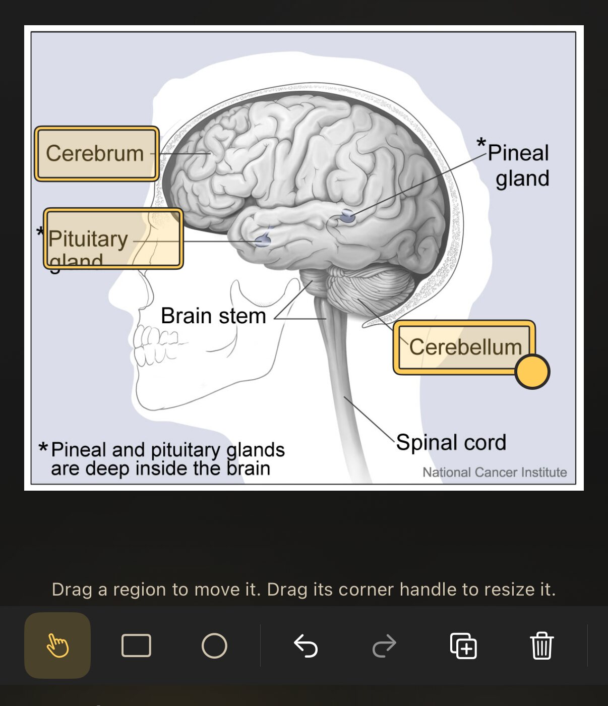
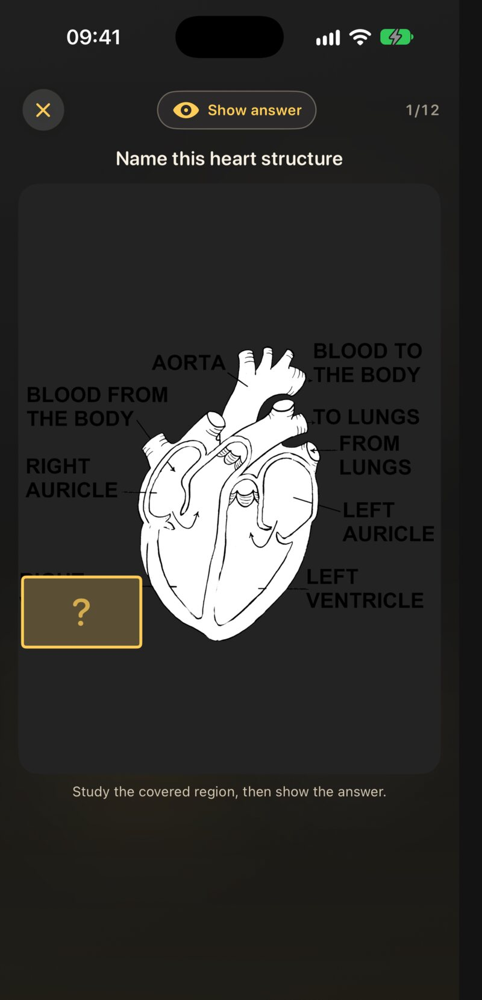

4.1 Ajouter une image
Chaque côté d’une carte a sa propre image. Il y a trois façons d’en ajouter une, et elles diffèrent par l’endroit où l’image se retrouve.
Dans le texte. Dans l’onglet Texte, touche le bouton image tout à gauche de la
barre de mise en forme (Insérer une image) et
choisis une photo. JustFlip! place le marqueur
![attachment:0] à l’emplacement du curseur, et l’image
apparaît exactement là sur la carte, entre les mots qui l’entourent.
Sur tout le côté. Passe à l’onglet Image et touche Choisir une image. Sans texte, l’image remplit le côté, centrée et mise à l’échelle. C’est le bon choix pour les cartes « Qu’est-ce que c’est ? » : un drapeau, une feuille, une radiographie.
Depuis le presse-papiers. Copie une image n’importe où, puis colle-la dans le champ de texte. JustFlip! enregistre l’image elle-même, pas un lien vers sa provenance, et insère le marqueur pour toi.

Un côté contient une seule image. En choisir une autre la remplace ; pour retirer une image, ouvre l’onglet Image et touche Retirer.
Le bouton image ouvre ta photothèque Photos. Pour une image qui se trouve ailleurs — un téléchargement, une capture d’écran, un scan — ajoute-la d’abord à Photos, puis choisis-la dans l’éditeur de carte.
Prends d’abord la photo avec l’app Appareil photo, puis choisis-la dans Photos depuis l’éditeur de carte.
4.1.1 Où se place une image
Une image peut se retrouver à trois endroits. JustFlip! en décide selon ce que contient le côté, pas selon un réglage :
| Sur le côté | Où va l’image |
|---|---|
| Une image et pas de texte | Elle remplit le côté, centrée |
Du texte avec un marqueur ![attachment:0] |
Dans le texte, à l’endroit du marqueur |
| Du texte sans marqueur | Sous le texte, en bloc |
Le troisième cas est celui des paquets que tu importes (chapitre 5) et de nombreux paquets prêts à l’emploi : le fichier désigne une image, mais le texte n’a pas de marqueur. Une telle image reste en place quand tu modifies le texte, et c’est dans l’onglet Image que tu la retires.
Quand le marqueur est dans ton texte et que tu le supprimes, l’image part avec lui à l’enregistrement.
Un côté que tu crées toi-même contient une image. Les cartes
importées d’Anki peuvent en porter plusieurs, chacune avec son propre
marqueur numéroté — ![attachment:0],
![attachment:1] et ainsi de suite. Supprime un marqueur et
seule cette image disparaît ; les autres restent.
Une grande image sur une carte affiche un bouton Zoomer. Il ouvre l’image en plein écran, où tu peux pincer ou toucher deux fois pour voir de plus près.
4.2 C’est l’onglet affiché qui est enregistré
Les onglets Texte, Image et Audio ressemblent à trois tiroirs d’un même côté. Ce sont plutôt trois types de côté, et Enregistrer enregistre celui dont l’onglet est affiché :
| Enregistré depuis | Ce que ce côté garde |
|---|---|
| Texte | Le texte ; une image si elle est dans le texte ou en dessous ; un son que la carte avait déjà |
| Image | L’image ; un son que la carte avait déjà. Le texte est supprimé |
| Audio | Le son, et la langue du côté. Le texte et l’image sont supprimés |
Tu remplaces le son ou l’image d’une carte qui a aussi du texte ? Fais la modification dans l’onglet Audio ou Image, puis reviens à Texte et touche Enregistrer depuis là. Enregistré depuis l’autre onglet, ce côté perd son texte.
Cette règle te donne des recettes simples pour les cartes mixtes :
- Du texte et une image : reste dans l’onglet Texte et ajoute l’image avec le bouton image de la barre d’outils.
- Une image et un son : choisis le son dans l’onglet Audio et enregistre. Puis modifie la carte, choisis l’image dans l’onglet Image et enregistre de nouveau.
- Du texte et un son : choisis le son dans l’onglet Audio et enregistre. Puis modifie la carte, écris le texte dans l’onglet Texte et enregistre.
Ces recettes en deux temps sont nécessaires parce qu’un son choisi sur une nouvelle carte n’est enregistré que depuis l’onglet Audio. Une fois que la carte a un son, les autres onglets le conservent.
4.3 Décrire et créditer les images
Quand un côté a une image, deux champs apparaissent dessous : Description de l’image et Licence de l’image. Les deux sont facultatifs, et les deux valent bien quelques secondes.
4.3.1 La description
VoiceOver lit la description à la place de l’image. Sans elle, il dit seulement « Image », ce qui n’apprend rien sur la carte à quelqu’un qui ne peut pas la voir.
Décris ce que l’image montre, pas ce qu’elle signifie. Sur une carte qui demande « Quel est cet oiseau ? », écris « Un petit oiseau brun à la poitrine rouge sur un piquet de clôture » — pas « Un rouge-gorge », qui donne la réponse.
La description est pour VoiceOver. L’indice parlé du chapitre 3,
![attachment:0]{une pomme rouge}, est ce que disent le
bouton haut-parleur et Lire les cartes. Une image sans indice reste
muette quand la carte est lue à voix haute, quelle que soit sa
description.
4.3.2 La licence
Tu utilises la photo ou le dessin de quelqu’un d’autre ? Indique
l’auteur et la licence dans Licence de l’image —
par exemple « Photo : Jeanne Dupont, CC BY 4.0 ». Les liens écrits sous
la forme [libellé](https://…) fonctionnent dans ce
champ.
Sur la carte, un petit bouton ⓘ apparaît en bas. Le toucher ouvre une feuille avec le texte complet : le crédit est là pour qui le veut, sans encombrer la carte.

Les paquets prêts à l’emploi et ceux créés par IA peuvent aussi
porter des licences, dans leurs champs q_image_license et
a_image_license (chapitre 5).
4.4 Taille, formats et synchronisation
L’image d’une carte voyage avec la carte. Elle est stockée dans ta bibliothèque et synchronisée via iCloud sur chaque appareil : une image ajoutée sur le Mac se retrouve sur ton iPhone un instant plus tard.
Ce confort a un prix : chaque mégaoctet se synchronise sur chaque appareil. JustFlip! garde les images sous contrôle tout seul. Quand tu enregistres, une image de plus de 3 000 pixels sur son grand côté est réduite à 3 000 ; une photo opaque est enregistrée en JPEG, et une image avec transparence la conserve. Les images plus petites sont enregistrées telles quelles.
Les fichiers son sont enregistrés exactement tels que tu les choisis. Un enregistrement de trois minutes peut facilement peser plus qu’une centaine de cartes de texte : coupe donc les extraits à la partie utile.
| Fonctionne | Ne fonctionne pas | |
|---|---|---|
| Images | Tout ce qu’affiche ta photothèque Photos ; PNG, JPEG, GIF et WebP depuis les imports | SVG et autres formats vectoriels |
| Son | Les fichiers que le système reconnaît comme audio, par exemple
.mp3, .m4a et .wav |
La vidéo |
Les dessins vectoriels (.svg) ne peuvent pas s’afficher
sur une carte. Exporte d’abord le dessin en PNG — à environ 2 000 pixels
de large, avec un fond blanc (voir Des images qui
fonctionnent).
4.5 Du son sur une carte
Ouvre l’onglet Audio et touche Choisir un fichier audio pour choisir un fichier dans Fichiers. L’onglet affiche alors le nom et la taille du fichier, un bouton corbeille pour le retirer, et Remplacer l’audio. En dessous se trouve la Langue du côté.
JustFlip! n’enregistre pas depuis le micro. Enregistre avec Dictaphone, partage le mémo vers Fichiers, et choisis-le depuis là.

4.5.1 Comment il est lu
Rien ne se lance tout seul. Ce que tu vois dépend du côté :
- Un côté qui n’est qu’un son affiche un grand bouton de lecture au milieu de la carte.
- Un côté qui a aussi du texte ou une image a un petit bouton Audio en bas, à côté du bouton haut-parleur. Pendant la lecture du son, il affiche Lecture.
Lancer le son arrête la voix si elle est en train de lire la carte, et inversement.
4.5.2 Plusieurs pistes
Les notes Anki portent parfois plus d’un son sur un côté — un mot, puis une phrase d’exemple. JustFlip! les garde tous, dans leur ordre d’origine. Le bouton du bas affiche alors Audio (2), Audio (3) et ainsi de suite, et ouvre un menu avec une entrée par piste.
L’éditeur n’affiche que la première piste. Remplacer l’audio ou le bouton corbeille agit sur toutes les pistes de ce côté. Si tu veux garder les pistes supplémentaires, ne touche pas à l’onglet Audio.
4.6 Occlusion d’image
L’occlusion d’image transforme une image en plusieurs cartes. Tu masques des parties d’un diagramme avec des formes ; chaque partie masquée devient sa propre carte, qui demande « Qu’y a-t-il là-dessous ? ». C’est le moyen le plus rapide d’apprendre une carte géographique, une planche d’anatomie, un circuit, un tableau de doigtés — tout ce qui est une image pleine de légendes.

4.6.1 Créer des cartes à occlusion
- Ouvre un paquet, touche le bouton Plus d’actions (•••) et choisis Ajouter des cartes à occlusion d’image.
- Touche Choisir une image et sélectionne l’image.
- Fais glisser sur l’image pour masquer une zone. Recommence pour chaque légende que tu veux apprendre.
- Choisis un mode, ajoute le texte facultatif, et touche Enregistrer N cartes.
Les outils au-dessus de l’image :
| Outil | Ce qu’il fait |
|---|---|
| Rectangle / Ellipse | Dessine une nouvelle zone en faisant glisser |
| Sélectionner | Déplace une zone en la faisant glisser ; redimensionne-la par sa poignée d’angle |
| Annuler / Rétablir | Recule et avance dans tes modifications |
| Dupliquer la zone | Copie la zone sélectionnée |
| Supprimer la zone | Retire la zone sélectionnée |
| Changer d’image | Remplace l’image en dessous |
4.6.2 Deux modes
Sous Mode, tu choisis quelle part de l’image est masquée pendant qu’une carte pose sa question. Dans les deux cas, chaque zone devient sa propre carte.
| Mode | Pendant la question | Idéal pour |
|---|---|---|
| Masquer une, deviner une | Seule la zone testée est masquée ; tu vois toutes les autres légendes | Apprendre où se trouvent les choses, avec les voisines comme indices |
| Masquer tout, deviner une | Toutes les zones sont masquées ; la zone testée a une bordure plus marquée et un point d’interrogation | T’interroger pour de bon, sans que les autres légendes te soufflent |
Commence par Masquer une, deviner une. Quand une image te semble facile, une deuxième série de cartes en Masquer tout, deviner une fait un bon examen.
4.6.3 Le texte autour
Trois champs facultatifs se trouvent sous le mode :
- En-tête (facultatif) — affiché au-dessus de l’image sur chaque carte. Mets la question ici : « Nomme cet os. »
- Notes sur toute l’image (facultatif) — affiché sous l’image une fois la réponse révélée. Idéal pour un moyen mnémotechnique ou un détail.
- Commentaires (facultatif) — une note pour toi-même. Elle est conservée avec les cartes mais ne s’affiche pas pendant la révision.
Vient ensuite Description de l’image. Comme le dit l’éditeur, VoiceOver la lit à la place de l’image : décris donc le diagramme sans donner de réponse — « Vue de face du squelette humain » plutôt que la liste des os.
Une zone masque exactement la surface que tu as dessinée. Si une légende dépasse de son rectangle, la réponse est visible. Dessine large — une marge autour de chaque légende ne coûte rien.
4.6.4 Réviser une carte à occlusion
Une carte à occlusion ne se retourne pas. L’image reste en place ; touche Voir la réponse en haut — ou appuie sur la barre d’espace d’un clavier — et la zone masquée s’ouvre, entourée, tandis que le reste ne bouge pas. Note-la ensuite comme n’importe quelle carte. Pince pour zoomer sur un diagramme détaillé.

Les cartes à occlusion font partie de tes révisions normales sur iPhone, iPad et Mac. L’Apple Watch les laisse de côté et t’indique combien de cartes attendent sur ton iPhone.
4.6.5 Modifier une carte à occlusion
Modifie n’importe quelle carte de la série — maintiens le doigt dessus (ou fais un clic droit sur Mac) et choisis Modifier la carte — et JustFlip! ouvre l’éditeur de zones, pas l’éditeur de texte. Tu peux y déplacer, ajouter ou supprimer des zones, changer le mode, le texte, ou même l’image.
Les zones que tu gardes conservent leur historique de révision. Une zone ajoutée devient une nouvelle carte ; une zone supprimée emporte sa carte avec elle.
Les notes d’occlusion d’image d’Anki, ainsi que celles de l’ancien module Image Occlusion Enhanced, arrivent sous forme de cartes à occlusion JustFlip! natives quand tu importes le paquet (chapitre 5). Les fichiers de paquet créés par le skill pour agent de codage peuvent aussi contenir des cartes à occlusion.
4.7 Des images qui fonctionnent
Une carte affiche ton image exactement telle qu’elle est. Il n’y a ni fond derrière, ni cadre, ni correction automatique du contraste. Les photos gardent ainsi un rendu naturel, et quelques habitudes valent la peine d’être prises.
Un PNG avec des traits noirs sur fond transparent rend parfaitement en mode clair. En mode sombre, la carte derrière est presque noire, et le dessin disparaît — traits, légendes, notes sur une portée, tout. Avant d’ajouter un diagramme, une image de formule ou un croquis scanné, donne-lui un fond blanc ou clair uni. La plupart des éditeurs d’images appellent cela aplatir ; l’export en JPEG le fait aussi. Vérifie la carte une fois en mode sombre avant d’en faire cinquante autres sur le même modèle.
Quelques autres règles empiriques :
- Utilise des images matricielles. PNG pour les diagrammes, le texte et les dessins au trait ; JPEG pour les photos. Pas de SVG.
- Environ 2 000 pixels sur le grand côté, c’est largement assez. JustFlip! n’affiche jamais une image sur une carte à plus de 2 200 pixels environ, et réduit tout ce qui dépasse 3 000 à l’enregistrement. Plus de résolution ne coûte que du temps de synchronisation.
- Recadre sans pitié. Une carte est petite. Coupe tout ce qui n’est pas l’objet de la question — l’image grandit gratuitement.
- Garde le texte de l’image en grand. Des légendes lisibles sur un écran d’ordinateur portable sont souvent floues sur une carte d’iPhone. Le zoom aide, mais une carte sur laquelle il faut zoomer se révise plus lentement.
- Une idée par image. Un diagramme à vingt légendes fait une mauvaise carte et vingt bonnes cartes à occlusion.
4.8 Référence rapide
| Tâche | Où |
|---|---|
| Image dans le texte | Onglet Texte → bouton image de la barre d’outils |
| Image sur tout le côté | Onglet Image → Choisir une image |
| Image depuis le presse-papiers | Colle-la dans le champ de texte (⌘V sur Mac) |
| Retirer une image | Onglet Image → Retirer |
| Décrire pour VoiceOver | Description de l’image, sous l’image |
| Créditer l’auteur | Licence de l’image → le bouton ⓘ sur la carte |
| Ajouter un son | Onglet Audio → Choisir un fichier audio |
| Remplacer ou retirer un son | Onglet Audio → Remplacer l’audio ou le bouton corbeille |
| Nouvelles cartes à occlusion | Paquet → Plus d’actions → Ajouter des cartes à occlusion d’image |
| Modifier les zones d’occlusion | Modifie n’importe quelle carte de la série |
| Révéler une carte à occlusion | Voir la réponse, ou la barre d’espace |